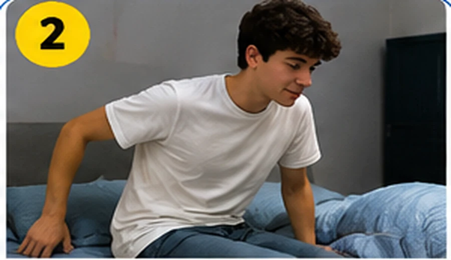
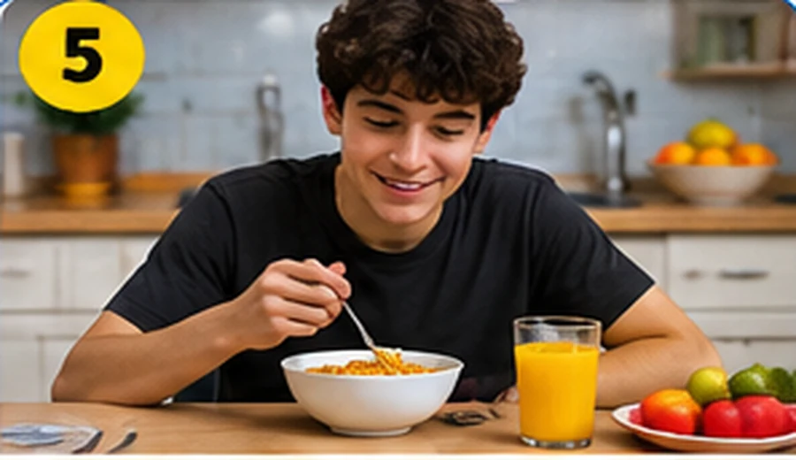
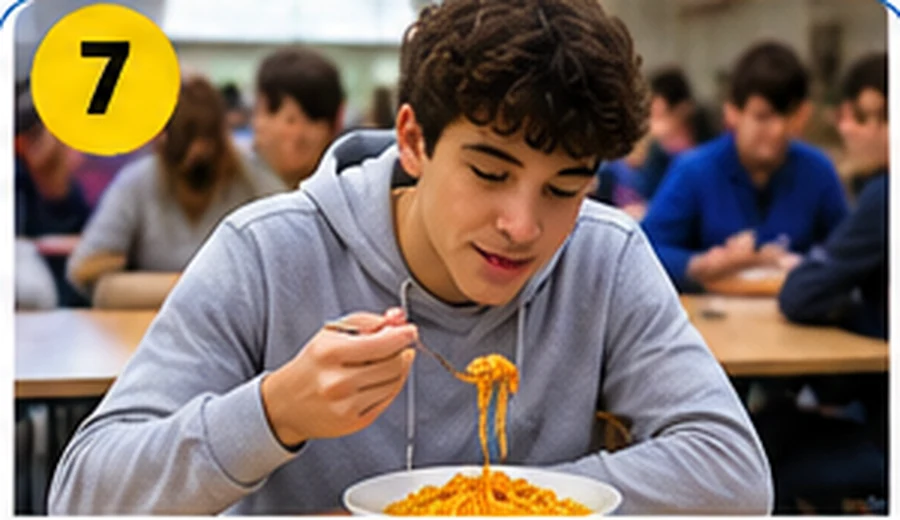
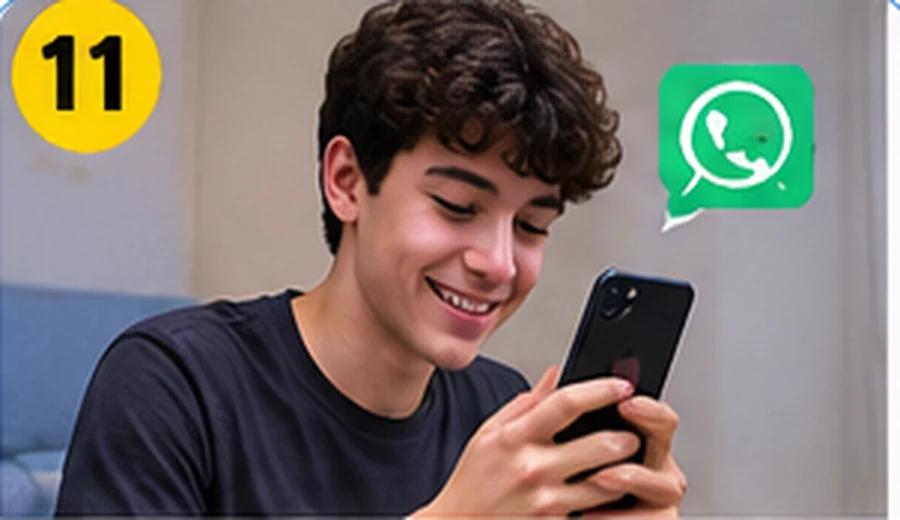
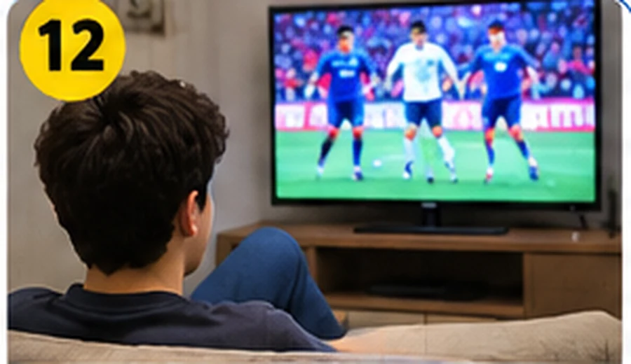
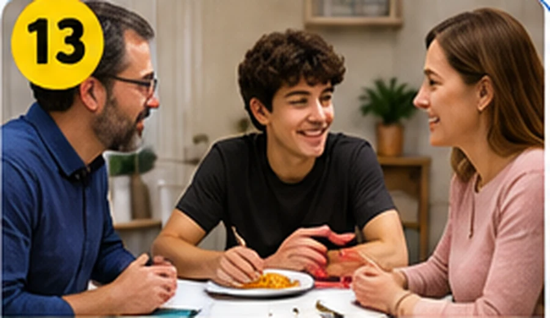
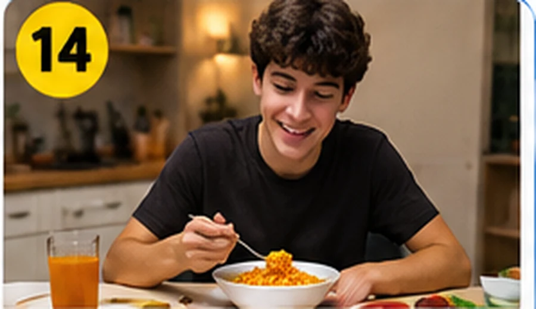
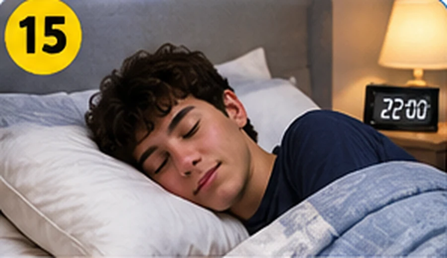

ALZARSI
to get up
Marco si alza dal letto.
Coniuga il verbo ↗Una giornata dalla mattina alla sera: guarda le fotografie, leggi gli esempi in italiano e scopri il significato in inglese.
Segui le 15 attività in ordine cronologico, dal risveglio fino all'ora di andare a letto. Premi Coniuga il verbo per aprire il coniugatore.



to browse the Internet
Marco naviga su Internet per cercare informazioni.
Coniuga il verbo ↗
to chat with friends
Marco chatta con i suoi amici sul telefono.
Coniuga il verbo ↗
to watch television
Marco guarda una partita di calcio in televisione.
Coniuga il verbo ↗


Per espressioni come fare i compiti, fare colazione e andare a dormire, il pulsante apre rispettivamente i verbi fare e andare. Le fotografie sono ritagliate dal poster illustrato originale, perciò risultano meno dettagliate delle immagini create singolarmente.